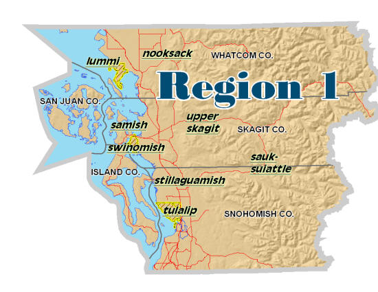

A Consortium of Tribes
PURPOSE:
Provide guidance for member tribes to develop sustainable and all-hazard comprehensive approaches to Terrorism and Homeland Security initiatives, and an all hazard emergency management approach that emphasizes both inter and intra jurisdictional cooperation to maximize resources in mutual aid, training, exercises, planning, and equipping. In addition, the council shall assist member tribes with regulatory requirements as mandated in various federal programs, without liability for compliance attached thereto.
Charter and Other Incorporation Documents
- NWTEMC Charter (revised December 2010)
- NWTEMC By-laws (revised December 2010)
- NWTEMC Conflict of Interest Policy (adopted Feb. 2009)
- NWTEMC Certificate of Incorporation, WA State July 11, 2008
- NWTEMC Charter Amendment Filing Confirmation, WA Sec. of State June 18, 2009
- NWTEMC Master Business License, WA State
- NWTEMC IRS Non-Profit Status Letter July 18, 2009
- Tribal Resolutions joining NWTEMC (incl. other misc. Resolutions submitted)
History
The eight tribes of Washington State Homeland Security Region 1 formed the NW Tribal Emergency Management Council to address homeland security and emergency management issues each tribe faces.
The Region I Homeland Security Tribes of Washington were at a severe disadvantage to address Emergency Management and Homeland Security Mandates and Initiatives due to lack of funded personnel to perform these functions. In addition to the lack of personnel to address the practical application of the needed scope of work, the Tribes were at a disadvantage to apply for grants for this very same reason. With the implementation of NIMS, the established implementation dates of many other related emergency management functions and the severe consequences that have been implemented for failure to comply; the Tribes continue to move toward creating a permanent solution. The creation of the Northwest Tribal Emergency Management Council is the first step toward addressing the many critical issues that face Washington State Tribes today.
A solution was proposed to form a pilot project, the consortium of Tribes of Region 1.
The Tribes of Region created a consortium of the eight Tribes for the purpose of Homeland Security to govern and oversee a needs assessment, develop a scope of work and propose deliverables. The Tulalip Tribes and the Lummi Nation, actively involved in the Region I Homeland Security Council since its inception, created many of the mandated documents, ordinances and programs required to pursue Homeland Security and Emergency Management. Through a proposed consortium of the eight Tribes in Region I, the Tulalip Tribes of Washington took the lead agency position for the purpose of administering of grants. The Lummi Nation and the Tulalip Tribes provided In-Kind Support toward this request. The request for funding primarily consisted of two phases. In Phase One, the funding request was that for two FTE positions to include one Homeland Security Manager and one Homeland Security Planner to come from '04 dollars. The Director was housed at the Lummi Nation. The Planner was housed at the Tulalip Tribes. The Manager and the Planner were governed by the NWTEMC and offered homeland security related services to all eight Tribes. These two newly created positions worked in concert with two existing positions, one at Tulalip and one at Lummi, whose primary functions were the application of Emergency Management related services. The Phase Two funding request came from '05 dollars and assisted in covering these same two FTE positions for the Homeland Security Manager and Planner. In-kind contributions and Alternative Resources continued to cover operational costs.
The initial formation of a governance process involving a preliminary agreement reached with each of the Tribes was developed. This agreement now provides the Tribes with a complete understanding of the overall vision and the need for success. The forum developed as a result of these meetings and now provides the Tribal Governments with the ability to openly discuss all aspects of regional Homeland Security and Emergency Management related issues. More importantly, this Consortium has become the means by which establishing effective communication, mutual trust and allowing for consensus regarding further actions may occur.
A formal Charter has been developed for the group. This document details the commitment of each Tribe to take the next step by establishing the designated representatives for the project by resolution. The Northwest Tribal Emergency Management Council (NWTEMC) has begun instituting the basic operational parameters for Homeland Security requirements and functional analysis while moving the project forward.
The NWTEMC now addresses the needs for administrative and operational support, as well as oversight requirements for implementation of mutual technical projects. The NWTEMC also addresses associated administrative issues such as any Resolutions, Ordinances, Memorandum of Understandings, etc, as well as the establishment of a management infrastructure.
The governance infrastructure includes basic rules under which the Council operates, including Robert’s Revised Rules of Order. The Council has formed and operates through the establishment of a majority rule, one-agency one-vote participatory process that applies equally regardless of an agency's size or jurisdiction. This structure ensures that all voices are equally heard and all concerns are addressed.
The Council also utilizes working groups from all levels of the represented agencies to address administrative functions, legal issues, logistical support, and technical development. The delegation of responsibilities among working groups reduces the requirement for the Council to deal with the day-to-day issues while maintaining their continued oversight.
A substantial portion of the initial developmental effort for the project has focused on identifying Tribal Homeland Security issues, Tribal program preparedness and analysis and regional policy development. The NWTEMC members have initially been comprised of the WA State Region I Homeland Security Council Tribal representatives, however, has now expanded to include Tribes from throughout Washington State. This governing body has worked diligently to keep the focus of this group on emergency management and preparedness, discouraging the potential for this council to be redirected toward any other purpose.
Twice a year, we hold a seminar to bring all of our partners together for the purpose of information sharing, education and systems building.